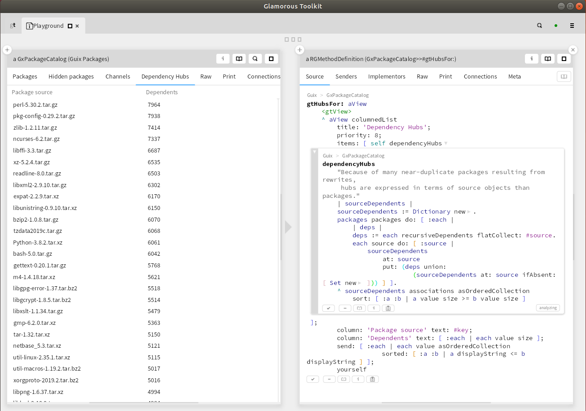

A few days ago, Google announced its experimental project Open Source Insights, which permits the exploration of the dependency graph of Open Source software. My first look at it ended with a disappointment: in its initial stage, the site considers only the package universes of Java, JavaScript, Go, and Rust. That excludes most of the software I know and use, which tends to be written mainly in C, C++, Fortran, and Python. But I do have a package manager that has all the dependency information for most of the software that I care about: Guix. So I set out to do my own exploration of the Guix dependency graph, with a particular focus: identifying the hubs of the Open Source dependency network.
This was also a good opportunity to test the practical utility of a new GUI for Guix that I have been working on recently as a side project. In fact, I added this dependency hub analysis to that GUI, so now you can access it with a simple click.
Software being the complex beast that it is, I have to start by properly defining the subjects of my inquiry. What exactly do I mean by “package”, “dependency”, and “dependency hub”?
The term package is widely used to describe a unit of development and distribution in software systems, but every package manager has a slightly different notion of what a package actually is. A package could be “Python”, or “Python 3.8.2”, or “Python 3.8.2 built with gcc 7.5, version X of dependency Y, …”. Guix adopts the last, most fine-grained, definition. This is a good choice when you want to do reproducible software builds, but it is not very useful for analyzing dependency graphs. So I chose the level of name + version number, meaning that I consider “Python 3.8.2” a different package from “Python 3.8.1”. That’s of course debatable as well. But in Guix, it is rare to have multiple versions of a piece of software coexist at the same time. When it does happen, there is a good reason, typically a significant evolution in the software that makes different dependents prefer different versions. An example is Python 2 vs. Python 3, or the different major versions of gcc. In those cases, looking at their dependencies and dependents separately does make sense.
The term dependency is also widely used with different meanings. The two most common ones are runtime dependency and build dependency. A runtime dependency of package X is a package that must be installed on the computer to use package X. In contrast, a build dependency is a package that is required in order to build package X, where building means anything required to turn source code into something executable. Think of it as a generalization of compiling. Usually the build dependencies are roughly a superset of the runtime dependencies: there are packages you need to build package X, e.g. a compiler, but which are then no longer required for using package X. It’s the build dependencies that matter for the evolution of software systems, so that’s the definition I used in my analysis.
Unfortunately, the complexity of defining dependencies doesn’t end there. Many packages have optional dependencies. When they are available, some additional functionality is enabled. Do you count them or not? My pragmatic take is that I trust the Guix developers to have made good choices. So for me, a dependency is whatever it takes to build a package in Guix.
This leaves the notion of a dependency hub to be defined. In network science, a hub is a node that has an exceptionally high number of connections to other nodes, such that a large share of the information propagating through the network passes through the hubs. A software dependency graph differs from most networks in that its edges have a direction: A depending on B is not the same as B depending on A. This leads to several a priori reasonable definitions for hubs: 1. packages that have many dependencies, 2. packages that have many dependents, and 3. packages for which the sum of dependencies plus dependents is high. Let’s immediately eliminate the last definition, as I see no interest in it. Definition 1 identifies the packages that are particularly vulnerable to software collapse, definition 2 the packages that can most easily cause software collapse.
The latter characteristic corresponds best to the capture of information flow as the defining feature of network hubs, and it also happens to be what I am most interested in. The information that flows in the network is requests for change. Nodes receive such requests from dependents, who are in fact the software’s clients or users. They typically ask for improved or extended functionality. Nodes also receive requests from dependencies, when they implement changes that break backward compatibility and then ask their dependents to adapt to these changes. The nodes that potentially receive and send many requests for change are thus the nodes who have the most dependents. They are the hubs in the dependency network. Note, however, that the asymmetry in the dependency relation still matters. Nodes can ignore requests for change coming from their dependents, but they cannot ignore requests coming from their dependencies. It’s called “dependency” for a reason!
At this point, I can take a break from theory and show you the results of my analysis. The top twenty hubs in the Guix dependency graph are:
| Package | Number of dependents |
|---|---|
| perl 5.30.2 | 7964 |
| pkg-config 0.29.2 | 7938 |
| zlib 1.2.11 | 7414 |
| ncurses 6.2 | 7337 |
| libffi 3.3 | 6687 |
| xz 5.2.4 | 6535 |
| readline 8.0 | 6503 |
| libxml2 2.9.10 | 6302 |
| expat 2.2.9 | 6170 |
| libunistring 0.9.10 | 6150 |
| bzip2 1.0.8 | 6070 |
| tzdata2019c | 6068 |
| Python 3.8.2 | 6061 |
| bash 5.0 | 6042 |
| gettext 0.20.1 | 5768 |
| m4 1.4.18 | 5621 |
| libgpg error-1.37 | 5518 |
| libgcrypt 1.8.5 | 5514 |
| libxslt 1.1.34 | 5479 |
| gmp 6.2.0 | 5363 |
If you want more, here is the full list as a JSON file, sorted by decreasing number of dependents.
If you have thought a bit about what to expect before looking at this table, you have probably included programming languages such as perl or python in this list. But perhaps you did not expect to see utilities such as pkg-config or bzip2. Remember these are build dependencies. The very first step in building a package, any package, is unpacking its source code. Many of the packages in my top-twenty list represent boring but essential infrastructure software. The software equivalent of the power grid and the road network: stuff that everybody just takes for granted. Such packages rarely get into the news, except when something goes seriously wrong, as in the case of the Heartbleed bug affecting OpenSSL. Which, by the way, is at position 634 in my list. It would be much higher up in a network defined by different criteria, of course. There’s more to software than build dependencies.
One motivation for writing this post was to point out a common fallacy in reasoning about Open Source software. A popular argument is that Open Source gives you the freedom to change software to fit your needs, by creating and maintaining your own fork. Or paying someone else to do it for you, if you are not an accomplished hacker yourself. The source code is there for anyone to grab, after all, and the license allows modification and redistribution.
This argument was valid in the 1980s. There were few packages, few dependencies, and a much higher percentage of computer users had programming experience. Today, you can perhaps maintain your own fork of Perl, but you cannot fork its hub position in the network, nor can you reasonably maintain forks of its 7964 dependants. If the Perl maintainers introduce a breaking change, those 7964 dependents will either adapt or disappear. Hypothetically, a large number of them could together envisage maintaining their own fork. But there are no good coordination mechanisms among developers of unrelated Open Source projects, and therefore this doesn’t happen in practice.
In an earlier post, I have written about community-owned monopolies in the Open Source universe. In that post, I wrote that for software users, there is no practical difference between Microsoft killing Windows 7 and the Python community killing Python 2, even though the former is proprietary and commercial, whereas the latter is Open Source. The reason is that both pieces of software are hubs in dependency networks. Microsoft and the Python developer community are two very different institutions, with very different goals, values, policies, legal status, etc. But that hardly matters for the average software user, whose work depends on a complex web of interacting pieces of software. At the level of that web, it’s the information flow patterns that determine evolution. Requests for change, or non-change. Average software users have practically no way to make their needs heard by the people who manage the hubs. Even the best-intentioned altruistic Open Source hub maintainer cannot possibly keep every user’s interests in mind, because there is no way to even be aware of them. A web of software is a very different beast than a single project. More is different.
In the almost 40 years since the beginnings of the Open Source movement, the mode of governance of Open Source projects has evolved significantly. Most importantly, all the people involved have realized that governance matters and must be consciously organized, rather than evolve through cumulative random accidents of history, which almost inevitably leads to a tyranny of structurelessness in the long run. Now we must develop an awareness of similar issues at the level of the web of Open Source projects, followed by the development and implementation of better information flow and decision structures.
I will conclude this post with a technical remark. I did my dependency hub analysis using a relatively new tool in the software world, called the Glamorous Toolkit, to which I added an interface to Guix. This toolbox significantly lowers the cost of developing new tools. In the screenshot below, you see on the left the user interface of my analysis. It’s an additional view on the Guix package catalog, complementing various other views that are already in place. On the right, you see the complete code for this analysis, including the user interface (which also gives access to the list of dependents, not just the number). In contrast to traditional scripts, there is no overhead for reading data or writing out the results. My code works on data structures that are already in place. What is not obvious from the screenshot is that you get the right-hand panel via alt-click from the left-hand one, meaning that users of my little analysis tool always have direct access to the code. It isn’t obvious either that modifying the code on the right will immediately update the view on the left, making development highly interactive. If you think notebooks are great, try Glamorous Toolkit. But be warned that you might then realize that notebooks are no longer the state of the art.
